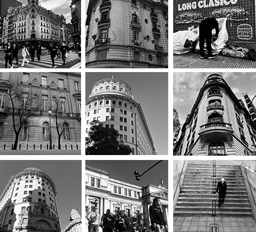

Portfolio
compilado de mis trabajos


-

La imprenta
La imprenta es el resultado de una búsqueda profunda por una identidad visual sobre una obra de teatro que se realiza en el Teatro Cervantes. Busqué una identidad relacionada con la obra, eligiendo estilos de presentaciones mas “rusticas”.
-

Mali skincare
MALI Skincare es el resultado de una búsqueda profunda por una identidad visual que conecte con el cuidado y la armonía interior. Aposté por una estética limpia y moderna, con una paleta suave y formas geométricas que evocan equilibrio.
-

Humificador
Realicé una sesión de fotos para la venta del humificador. La sesión incluye una foto del producto para mostrar el mismo, una foto del producto como decoración y una foto del producto en uso. Esto puede variar dependiendo el producto y la sesión de fotos que se desee realizar.
-

Buenos Aires
Realicé una sesión de fotos para un trabajo en el cual mediante fotografías había que lograr describir Buenos Aires con toda su esencia. El trabajo fue realizado todo en blanco y negro a pedido del cliente y logrando darle un estilo “antiguo”.